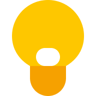

Notes you add appear here
Notes with upcoming reminders appear here
Add a label to a note to see it here
Archived notes appear here
Notes in Trash are deleted forever after 7 days.
No notes in Trash
No matching notes found